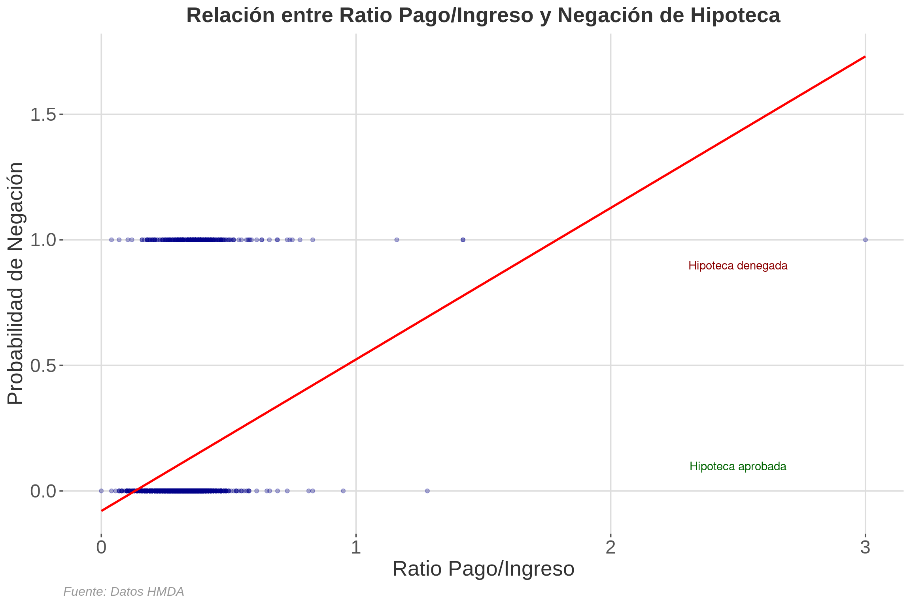
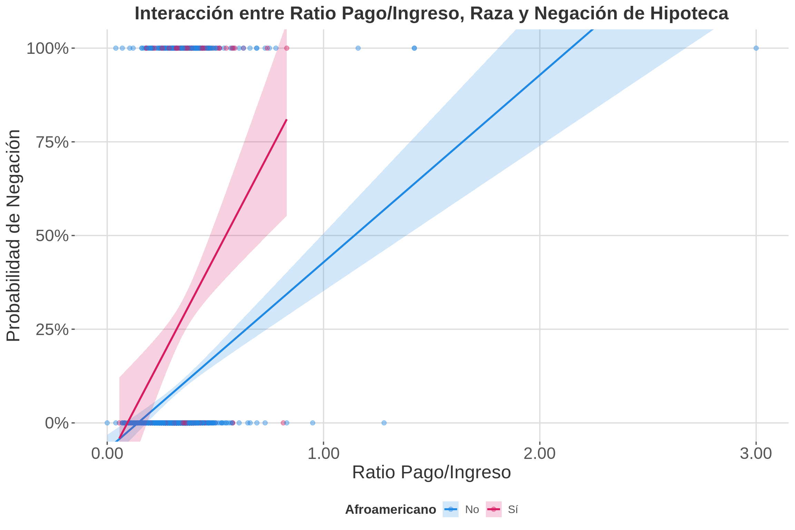
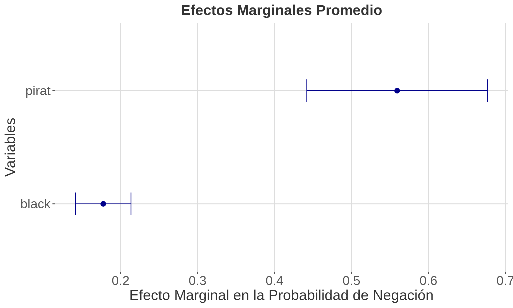

```{r setup}
knitr::opts_chunk$set(echo = TRUE, message = FALSE, warning = FALSE)
library(AER)
library(lmtest)
library(sandwich)
library(ggplot2)
library(stargazer)
library(knitr)
library(kableExtra)
library(margins)
library(scales)
library(dplyr)
``````{r}
# Configuración del tema personalizado para ggplot
theme_custom <- function() {
theme_minimal(base_size = 14) + # Establece un tamaño base para el texto
theme(
text = element_text(family = "Arial", color = "#333333"), # Cambia la fuente y el color del texto
axis.title = element_text(size = 20, face = "plain", color = "#333333"), # Cambia a 'plain' para no usar negrita
axis.text = element_text(size = 18, color = "#555555"),
axis.ticks = element_line(color = "#555555"), # Añade color a las marcas de los ejes
plot.title = element_text(size = 20, face = "bold", hjust = 0.5, color = "#333333"),
plot.subtitle = element_text(size = 16, hjust = 0.5, color = "#666666"), # Añade estilo para subtítulos
plot.caption = element_text(size = 12, hjust = 1, color = "#999999"), # Añade estilo para las leyendas
legend.title = element_text(size = 14, face = "bold", color = "#333333"),
legend.text = element_text(size = 12, color = "#555555"),
legend.position = "bottom",
panel.grid.major = element_line(color = "#dddddd"), # Cambia el color de las líneas de la cuadrícula mayor
panel.grid.minor = element_blank(), # Elimina las líneas de la cuadrícula menor
panel.background = element_rect(fill = "white", color = NA), # Fondo blanco para el panel
plot.background = element_rect(fill = "white", color = NA) # Fondo blanco para el gráfico
)
}
# Establecer el tema como predeterminado
theme_set(theme_custom())
```1 Introducción a los Modelos Lineales de Probabilidad (LPM)
Los Modelos Lineales de Probabilidad (LPM) son una herramienta estadística utilizada para modelar variables dependientes binarias. A pesar de sus limitaciones, son valiosos por su simplicidad y facilidad de interpretación.
Definición Formal del LPM
El modelo de regresión lineal con una variable dependiente binaria \(Y_i\) se define como:
\[E(Y|X_1,X_2,\ldots,X_k) = P(Y=1|X_1,X_2,\ldots,X_k) = \beta_0 + \beta_1X_1 + \beta_2X_2 + \cdots + \beta_kX_k\]
donde \(\beta_j\) representa el cambio en la probabilidad de que \(Y_i=1\), manteniendo constantes los otros \(k-1\) regresores.
2 Implementación en R
Utilizaremos el conjunto de datos HMDA del paquete AER para analizar solicitudes de hipotecas en Boston en 1990.
```{r}
data(HMDA)
HMDA$deny <- as.numeric(HMDA$deny) - 1
kable(head(HMDA), caption = "Primeras filas del conjunto de datos HMDA") %>%
kable_styling(bootstrap_options = c("striped", "hover", "condensed"))
```| deny | pirat | hirat | lvrat | chist | mhist | phist | unemp | selfemp | insurance | condomin | afam | single | hschool |
|---|---|---|---|---|---|---|---|---|---|---|---|---|---|
| 0 | 0.221 | 0.221 | 0.8000000 | 5 | 2 | no | 3.9 | no | no | no | no | no | yes |
| 0 | 0.265 | 0.265 | 0.9218750 | 2 | 2 | no | 3.2 | no | no | no | no | yes | yes |
| 0 | 0.372 | 0.248 | 0.9203980 | 1 | 2 | no | 3.2 | no | no | no | no | no | yes |
| 0 | 0.320 | 0.250 | 0.8604651 | 1 | 2 | no | 4.3 | no | no | no | no | no | yes |
| 0 | 0.360 | 0.350 | 0.6000000 | 1 | 1 | no | 3.2 | no | no | no | no | no | yes |
| 0 | 0.240 | 0.170 | 0.5105263 | 1 | 1 | no | 3.9 | no | no | no | no | no | yes |
2.1 Modelo Simple
Estimamos un modelo simple utilizando ‘pirat’ (proporción de pagos mensuales del préstamo respecto a los ingresos del solicitante) para predecir ‘deny’ (negación de la solicitud de hipoteca).
```{r, results = "asis"}
modelo_simple <- lm(deny ~ pirat, data = HMDA)
stargazer(modelo_simple, type = "html",
title = "Resultados del Modelo Lineal de Probabilidad Simple",
column.labels = c("Coeficiente"),
covariate.labels = c("Ratio Pago/Ingreso", "Constante"),
dep.var.labels = "Negación de Hipoteca")
```| Dependent variable: | |
| Negación de Hipoteca | |
| Coeficiente | |
| Ratio Pago/Ingreso | 0.604*** |
| (0.061) | |
| Constante | -0.080*** |
| (0.021) | |
| Observations | 2,380 |
| R2 | 0.040 |
| Adjusted R2 | 0.039 |
| Residual Std. Error | 0.318 (df = 2378) |
| F Statistic | 98.406*** (df = 1; 2378) |
| Note: | p<0.1; p<0.05; p<0.01 |
Interpretación del Modelo Simple
- Intercepto (-0.07991): Cuando la proporción de pagos a ingresos es 0, la probabilidad estimada de negación del préstamo es aproximadamente -7.99%.
- Coeficiente de pirat (0.60353): Por cada unidad de aumento en la proporción de pagos a ingresos, la probabilidad de negación del préstamo aumenta en aproximadamente 60.35 puntos porcentuales.
2.2 Visualización Avanzada
```{r, fig.width=12, fig.height=8}
ggplot(HMDA, aes(x = pirat, y = deny)) +
geom_point(alpha = 0.3, color = "darkblue") +
geom_smooth(method = "lm", se = FALSE, color = "red") +
labs(title = "Relación entre Ratio Pago/Ingreso y Negación de Hipoteca",
x = "Ratio Pago/Ingreso",
y = "Probabilidad de Negación",
caption = "Fuente: Datos HMDA") +
#theme_minimal() +
theme(plot.title = element_text(hjust = 0.5, face = "bold"),
plot.caption = element_text(hjust = 0, face = "italic")) +
annotate("text", x = 2.5, y = 0.9, label = "Hipoteca denegada", color = "darkred") +
annotate("text", x = 2.5, y = 0.1, label = "Hipoteca aprobada", color = "darkgreen")
```
2.2.1 Explicación del Gráfico
Este gráfico muestra la relación entre el ratio pago/ingreso (eje X) y la probabilidad de negación de hipoteca (eje Y):
- Puntos: Cada punto representa una solicitud de hipoteca. La transparencia (alpha = 0.3) ayuda a visualizar la densidad de puntos.
- Línea roja: Es la línea de regresión del modelo LPM simple. Su pendiente positiva indica que a mayor ratio pago/ingreso, mayor es la probabilidad de negación.
- Anotaciones: “Hipoteca denegada” e “Hipoteca aprobada” ayudan a interpretar los valores 1 y 0 en el eje Y.
- Limitación visible: Nótese que la línea de regresión se extiende más allá de 1 en el eje Y para ratios altos, lo cual es una limitación del LPM.
2.3 Errores Estándar Robustos
```{r, results = "asis"}
coef_robust <- coeftest(modelo_simple, vcov. = vcovHC, type = "HC1")
stargazer(coef_robust, type = "html",
title = "Coeficientes con Errores Estándar Robustos",
column.labels = c("Estimación", "Error Est.", "Estadístico t", "p-valor"),
covariate.labels = c("(Intercepto)", "Ratio Pago/Ingreso"))
```| Dependent variable: | |
| Estimación | |
| (Intercepto) | 0.604*** |
| (0.098) | |
| Ratio Pago/Ingreso | -0.080** |
| (0.032) | |
| Note: | p<0.1; p<0.05; p<0.01 |
Importancia de los Errores Estándar Robustos
En los LPM, es crucial usar errores estándar robustos debido a la heteroscedasticidad inherente del modelo. Esto asegura inferencias estadísticas más confiables.
3 Modelo Ampliado
Añadimos la variable ‘black’ para investigar posibles efectos de discriminación racial.
```{r, results = "asis"}
HMDA <- HMDA %>% mutate(black = case_when(afam == "yes" ~ 1, afam == "no" ~ 0))
modelo_ampliado <- lm(deny ~ pirat + black, data = HMDA)
coef_ampliado <- coeftest(modelo_ampliado, vcov. = vcovHC)
stargazer(modelo_simple, modelo_ampliado, type = "html",
title = "Comparación de Modelos LPM",
column.labels = c("Modelo Simple", "Modelo Ampliado"),
covariate.labels = c("Ratio Pago/Ingreso", "Afroamericano", "Constante"),
dep.var.labels = "Negación de Hipoteca",
add.lines = list(c("Errores Estándar", "Robustos", "Robustos")))
```| Dependent variable: | ||
| Negación de Hipoteca | ||
| Modelo Simple | Modelo Ampliado | |
| (1) | (2) | |
| Ratio Pago/Ingreso | 0.604*** | 0.559*** |
| (0.061) | (0.060) | |
| Afroamericano | 0.177*** | |
| (0.018) | ||
| Constante | -0.080*** | -0.091*** |
| (0.021) | (0.021) | |
| Errores Estándar | Robustos | Robustos |
| Observations | 2,380 | 2,380 |
| R2 | 0.040 | 0.076 |
| Adjusted R2 | 0.039 | 0.075 |
| Residual Std. Error | 0.318 (df = 2378) | 0.312 (df = 2377) |
| F Statistic | 98.406*** (df = 1; 2378) | 97.760*** (df = 2; 2377) |
| Note: | p<0.1; p<0.05; p<0.01 | |
Interpretación del Coeficiente de ‘black’
El coeficiente positivo y significativo de ‘black’ (0.177) sugiere que, manteniendo constante el ratio pago/ingreso, ser afroamericano aumenta la probabilidad de denegación de una hipoteca en aproximadamente 17.7 puntos porcentuales. Este hallazgo podría indicar discriminación racial, pero se deben considerar posibles variables omitidas antes de llegar a conclusiones definitivas.
3.1 Análisis Gráfico de Interacción
```{r, fig.width=12, fig.height=8}
HMDA %>%
ggplot(aes(x = pirat, y = deny, color = factor(black))) +
geom_point(alpha = 0.4, size = 2) +
geom_smooth(method = "lm", se = TRUE, aes(fill = factor(black)), alpha = 0.2) +
labs(title = "Interacción entre Ratio Pago/Ingreso, Raza y Negación de Hipoteca",
x = "Ratio Pago/Ingreso",
y = "Probabilidad de Negación",
color = "Afroamericano",
fill = "Afroamericano") +
scale_color_manual(values = c("0" = "#1E88E5", "1" = "#D81B60"),
labels = c("0" = "No", "1" = "Sí")) +
scale_fill_manual(values = c("0" = "#1E88E5", "1" = "#D81B60"),
labels = c("0" = "No", "1" = "Sí")) +
coord_cartesian(ylim = c(0, 1)) +
scale_y_continuous(labels = percent_format(accuracy = 1)) +
scale_x_continuous(labels = number_format(accuracy = 0.01)) +
theme(legend.position = "bottom",
panel.grid.minor = element_blank())
```
3.1.1 Explicación del Gráfico de Interacción
Este gráfico muestra cómo la relación entre el ratio pago/ingreso y la probabilidad de negación de hipoteca varía según la raza del solicitante:
- Líneas de regresión: La línea roja (afroamericanos) está consistentemente por encima de la línea azul (no afroamericanos), indicando una mayor probabilidad de negación para afroamericanos en todos los niveles de ratio pago/ingreso.
- Pendientes: Ambas líneas tienen pendientes positivas, lo que significa que para ambos grupos, un mayor ratio pago/ingreso se asocia con una mayor probabilidad de negación.
- Brecha: La distancia vertical entre las líneas representa la diferencia en la probabilidad de negación entre afroamericanos y no afroamericanos con el mismo ratio pago/ingreso.
- Interpretación: Este gráfico sugiere una posible discriminación racial en la concesión de hipotecas, ya que los solicitantes afroamericanos tienen una mayor probabilidad de negación incluso con el mismo ratio pago/ingreso que los solicitantes no afroamericanos.
3.2 Efectos Marginales
Para entender mejor cómo cambian las probabilidades predichas a medida que cambian las variables independientes, calculamos los efectos marginales.
```{r}
efectos_marginales <- margins(modelo_ampliado)
summary_efectos <- summary(efectos_marginales)
```3.2.1 Gráfico de Efectos Marginales
```{r, fig.width=10, fig.height=6}
ggplot(summary_efectos, aes(x = factor, y = AME)) +
geom_point(size = 3, color = "darkblue") +
geom_errorbar(aes(ymin = lower, ymax = upper), width = 0.2, color = "darkblue") +
labs(title = "Efectos Marginales Promedio",
x = "Variables",
y = "Efecto Marginal en la Probabilidad de Negación") +
theme(plot.title = element_text(hjust = 0.5, face = "bold")) +
coord_flip()
```
3.2.2 Explicación del Gráfico de Efectos Marginales
Este gráfico muestra los efectos marginales promedio (AME) de cada variable en el modelo:
- Puntos: Representan el efecto marginal promedio de cada variable.
- Barras de error: Indican el intervalo de confianza para cada efecto marginal.
- Interpretación:
- Para ‘pirat’: Un aumento de una unidad en el ratio pago/ingreso se asocia con un aumento promedio de aproximadamente 0.56 en la probabilidad de negación.
- Para ‘black’: Ser afroamericano se asocia con un aumento promedio de aproximadamente 0.18 en la probabilidad de negación, manteniendo constante el ratio pago/ingreso.
- Significancia: Ambos efectos son estadísticamente significativos, ya que sus intervalos de confianza no incluyen el cero.
4 Limitaciones y Consideraciones
- Predicciones fuera del rango [0,1]: Los LPM pueden predecir probabilidades ilógicas.
- Heterocedasticidad: Viola el supuesto de homocedasticidad de OLS.
- Efectos marginales constantes: Asume efectos lineales que pueden no ser realistas.
- Interpretación del R²: No tiene una interpretación clara en LPM.
Alternativas a LPM
Para abordar las limitaciones de los LPM, se pueden considerar modelos más sofisticados:
- Modelo Logit: Utiliza la función logística para modelar probabilidades.
- Modelo Probit: Emplea la función de distribución acumulativa normal.
Estos modelos garantizan predicciones dentro del rango [0,1] y permiten efectos marginales no lineales.
5 Conclusión
Los Modelos Lineales de Probabilidad ofrecen una aproximación simple y directamente interpretable para analizar variables dependientes binarias. En el contexto de préstamos hipotecarios, nos han permitido identificar factores que influyen en la probabilidad de denegación, incluyendo posibles indicios de discriminación racial.
Sin embargo, las limitaciones de los LPM sugieren que para análisis más robustos, especialmente cuando se trabaja con probabilidades cercanas a los extremos o se sospecha de relaciones no lineales, modelos como logit o probit podrían ser más apropiados. En efecto, este tipo de aproximaciones sirven como punto de partida para investigaciones más profundas sobre prácticas de préstamo justas y factores que influyen en las decisiones de aprobación de hipotecas.